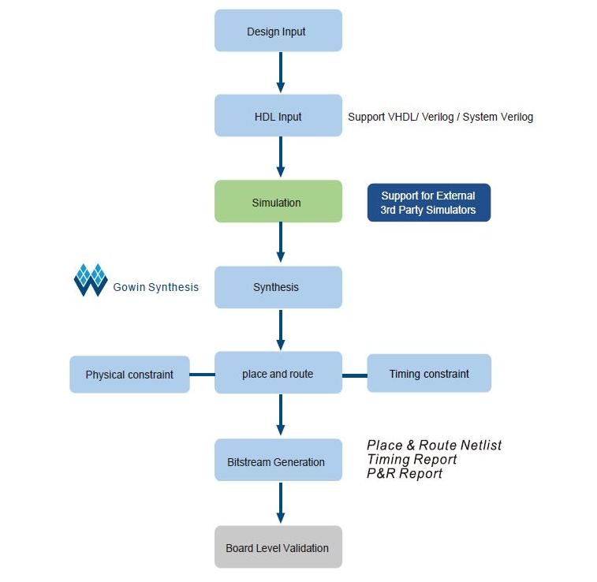
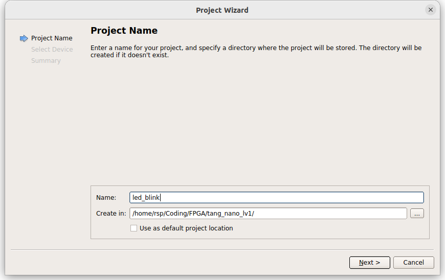
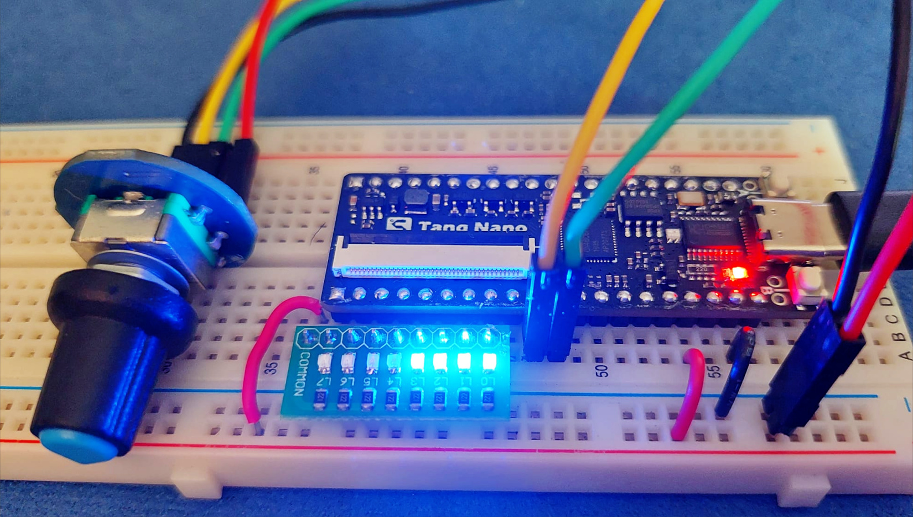

การใช้งานซอฟต์แวร์ Gowin IDE Standard Edition สำหรับบอร์ด Sipeed Tang Nano#
Keywords: Gowin FPGA, Gowin EDA Software, Sipeed Tang Nano
▷ บอร์ด Sipeed Tang Nano#
บริษัท Sipeed ได้พัฒนาบอร์ด FPGA ในกลุ่มที่เรียกว่า Sipeed Tang FPGA และมีบอร์ดรุ่นแรกคือ Sipeed Tang Nano ที่มีชิป FPGA เป็นรุ่น GW1N-1-LV (LittleBee FPGA family, 55nm LP technology) ของบริษัท Guangdong Gowin Semiconductor (GOWINSEMI) จากประเทศจีน และมีราคาไม่แพง (ราคาไม่เกิน $6 หรือ 250 ~ 300 บาท โดยประมาณ) เหมาะสำหรับผู้เริ่มต้นเรียนรู้เกี่ยวกับ FPGA หลังจากนั้นจึงมีบอร์ด FPGA รุ่นอื่นของ Sipeed ทยอยออกมาสู่ตลาด
คำแนะนำ: สำหรับผู้ที่สนใจจะหาซื้อบอร์ด Tang Nano (GW1N-1 QN48) มาลองใช้งาน แนะนำให้เลือกใช้ Tang Nano 1K (GW1NZ-1 QN48) แทน เนื่องจากบอร์ด Tang Nano ไม่มีการผลิตและจำหน่ายแล้ว
รูป: บอร์ด Sipeed Tang Nano FPGA
รูป: แผนผังแสดงตำแหน่งขาต่าง ๆ ของบอร์ด Sipeed Tang Nano FPGA

รูป: ตัวอย่างบอร์ด Tang Nano Series: 1K / 4K / 9K / 20K (Source: Sipeed)

รูป: Tang Primer 20K - Core Board (Source: Sipeed)

รูป: Tang Primer 20K - Lite Board (Source: Sipeed)
ข้อมูลเกี่ยวกับบอร์ด Sipeed Tang Nano (Released: October 2019)
- FPGA: Gowin GW1N-1-LV
- LUTs: 1,152
- FFs: 864
- Block SRAM: 72Kbits
- User Flash: 96Kbits
- PLL: 1
- I/O banks: 4
- Core Voltage: 1.2V
- IC Package: QN48
- Storage: Quad-SPI PSRAM, 64Mbits (8MB), 3.3V
- USB Type-C port
- WCH CH552T: USB-JTAG & USB-Serial
- 3x RGB LED (active-low):
- LED_G: IOB7A / 16 pin
- LED_B: IOB10A / 17 pin
- LED_R: IOB10B / 18 pin
- 2x User Buttons:
- Button A: IOB3B / 14 pin
- Button B: IOB6B / 15 pin
- 24MHz Crystal Oscillator:
- XTAL_IN: GCLKT_2 / 35 pin
- Standard 40-pin RGB LCD interface
- Breadboard-compatible Pin Headers (2x20 pins)
ข้อสังเกต: บอร์ด Sipeed Tang Nano 1K / 4K / 9K / 20K สามารถใช้ได้กับซอฟต์แวร์ Gowin EDA Educational Version (Free Version) โดยไม่ต้องขอไฟล์ลิขสิทธิ์ในการใช้งาน แต่ถ้าเลือกใช้งาน Gowin EDA Standard Version จะต้องทำขั้นตอนขอ License File จากเว็บไซต์ของบริษัท
▷ การใช้งานซอฟต์แวร์ Gowin EDA สำหรับบอร์ด Sipeed Tang Nano#
บริษัท Gowin ได้เปิดให้ผู้ใช้สามารถดาวน์โหลดซอฟต์แวร์ Gowin (EDA) IDE เพื่อนำใช้ในการออกแบบวงจรดิจิทัลสำหรับชิป FPGAs แบ่งเป็น 2 เวอร์ชัน สำหรับระบบปฏิบัติการ Windows และ Linux
- Gowin Standard Edition: ผู้ใช้จะต้องลงทะเบียนและเข้าไปกรอกข้อมูลบนเว็บไซต์ของบริษัท เพื่อขอรับไฟล์ลิขสิทธิ์ (Apply License File) ทางอีเมล์ และทดลองใช้ซอฟต์แวร์ได้ฟรี เป็นระยะเวลา 1 ปี ถ้าเลือกใช้บอร์ด Sipeed Tang Nano จะต้องเลือกใช้เวอร์ชันนี้
- Gowin Education Edition: เป็นซอฟต์แวร์เหมือน Gowin EDA ไม่ต้องใช้ไฟล์ลิขสิทธิ์ใด ๆ แต่จะใช้ได้กับชิป Gowin FPGAs บางรุ่นเท่านั้น ถ้าเลือกใช้บอร์ด เช่น Sipeed Tang Nano 1K / 4K / 9K / 20K (เรียงตามความจุเชิงลอจิกจากน้อยไปมาก) และ Tang Primer 20K ก็สามารถใช้ซอฟต์แวร์ในเวอร์ชันนี้ได้

รูป: Gowin FPGA Design Flow (Source: Gowin Semiconductor)
ถัดไปเป็นการทดลองใช้งานซอฟต์แวร์ Gowin IDE - Standard Edition สำหรับระบบปฏิบัติการ Linux (Ubuntu Desktop 22.04 LTS)
ไฟล์สำหรับการติดตั้งใช้งานคือ Gowin_V1.9.9Beta-2_linux.tar.gz
และนำมาแตกไฟล์ จะได้ไดเรกทอรีย่อยชื่อ ./IDE และ ./Programmer
$ wget -c https://cdn.gowinsemi.com.cn/Gowin_V1.9.9Beta-2_linux.tar.gz
$ tar xvfz Gowin_V1.9.9Beta-2_linux.tar.gz
$ cd Gowin_V1.9.9Beta-2_linux/
เปิดใช้งานโปรแกรมโดยทำคำสั่ง
$ ./IDE/bin/gw_ide &
เริ่มต้นจะมีการตรวจสอบไฟล์ลิขสิทธิ์โดย Gowin License Manager เมื่อผู้ใช้ได้รับไฟล์ .lic ผ่านช่องทางอีเมล์มาแล้ว ให้คลิกเลือกไฟล์ดังกล่าว และกดปุ่ม Check หากตรวจสอบแล้วถูกต้อง ให้กดปุ่ม Save
รูป: การตรวจสอบไฟล์ลิขสิทธิ์ก่อนใช้งานโดย Gowin License Manager
เปิดใช้งาน Gowin EDA Standard Edition ภายใต้การทำงานของ Ubuntu 22.04 LTS
คลิกเลือกทำขั้นตอน New Project ...
รูป: หน้าต่างเริ่มต้น (Start Page) สำหรับการใช้งาน Gowin IDE
รูป: กดปุ่ม OK เพื่อสร้างโปรเจกต์ใหม่สำหรับการออกแบบวงจรดิจิทัลเพื่อใช้งานกับชิป FPGA

รูป: ระบุไดเรกทอรีของโปรเจกต์ใหม่ และชื่อของโปรเจกต์ (ในรูปตัวอย่าง ได้ใช้ชื่อโปรเจกต์ led_blink)
รูป: เลือกชิป FPGA ที่ต้องการใช้งาน (เลือก Device: GW1N-1,
IC Package: QFN48, Speed: C6/I5, Voltage: LV)
รูป: สรุปรายละเอียดในภาพรวม ก่อนการสร้างโปรเจกต์ใหม่
รูป: หน้าต่างหลักของ Gowin IDE หลังจากที่ได้มีการสร้างและเปิดโปรเจกต์ใหม่แล้ว
ถัดไปให้เพิ่มไฟล์ Source Code เช่น VHDL หรือจะเป็น Verilog / SystemVerilog แต่ในตัวอย่างนี้ จะเป็นโค้ดภาษา VHDL ที่ทำให้ RGB LED ซึ่งมีขาควบคุม 3 ขา มีแสงสีแดง เขียว และ น้ำเงิน ติดดับสลับกันไปตามลำดับ
รูป: การสร้างไฟล์ใหม่ โดยเลือกเป็นไฟล์ VHDL ใส่ไว้ในโปรเจกต์ แล้วเพิ่มโค้ดตามตัวอย่าง
------------------------------------------------------------------
library ieee;
use ieee.std_logic_1164.all;
use ieee.numeric_std.all;
------------------------------------------------------------------
entity LED_BLINK is
generic (
CLK_HZ : natural := 24000000
);
port(
CLK : in std_logic; -- system clock
nRST : in std_logic; -- global asynchronous reset (active-low)
LEDS : out std_logic_vector(2 downto 0) -- RGB LED Pins
);
end LED_BLINK;
architecture SYNTH of LED_BLINK is
constant COUNT_PERIOD : integer := CLK_HZ/10;
subtype count_t is integer range 0 to (COUNT_PERIOD-1);
signal count : count_t := 0;
signal leds_reg : std_logic_vector(2 downto 0);
signal shift_en : std_logic;
begin
LEDS <= not leds_reg; -- use the register's bits (inverted) for LEDs
process (nRST, CLK) begin
if nRST = '0' then
count <= 0;
shift_en <= '0';
elsif rising_edge(CLK) then
-- check whether the counter reaches the max. value.
if count = (COUNT_PERIOD-1) then
count <= 0; -- reset the counter.
shift_en <= '1'; -- enable register shift.
else
count <= count+1; -- increment counter by 1.
shift_en <= '0'; -- disable register shift.
end if;
end if;
end process;
process (nRST, CLK) begin
if nRST = '0' then
leds_reg <= "001"; -- initialize the RGB_LED register
elsif rising_edge(CLK) then
if shift_en='1' then -- register shifting is enabled.
-- shift left
leds_reg <= leds_reg(1 downto 0) & leds_reg(2);
end if;
end if;
end process;
end SYNTH;
รูป: ทำขั้นตอน Synthesize เพื่อแปลงโค้ด VHDL ให้เป็นวงจรดิจิทัลในระดับล่าง โดยใช้ทรัพยากรภายในชิป FPGA
รูป: เพิ่มไฟล์ Physical Constraint File (.cst) สำหรับวงจรดิจิทัลในโปรเจกต์ เพื่อกำหนดคุณสมบัติหรือการเลือกใช้ขา I/O Pins ของชิป FPGA
รูป: ตัวอย่างข้อความในไฟล์ led_blink.cst เพื่อเลือกใช้ขา I/O Pins
IO_LOC "CLK" 35;
IO_LOC "nRST" 15;
IO_LOC "LEDS[0]" 16;
IO_LOC "LEDS[1]" 17;
IO_LOC "LEDS[2]" 18;
IO_PORT "CLK" IO_TYPE=LVCMOS33;
IO_PORT "nRST" IO_TYPE=LVCMOS33 PULL_MODE=UP;
IO_PORT "LEDS[0]" IO_TYPE=LVCMOS33 DRIVE=8;
IO_PORT "LEDS[1]" IO_TYPE=LVCMOS33 DRIVE=8;
IO_PORT "LEDS[2]" IO_TYPE=LVCMOS33 DRIVE=8;
จากนั้นให้ทำขั้นตอน Synthesize และตามด้วย Place & Route แล้วลองดูรายงานสรุปผลการดำเนินการ เช่น Synthesis Report และ Place & Route Report
รูป: ตัวอย่างตารางแสดงข้อมูลเกี่ยวกับการใช้ทรัพยากรของชิป FPGA ในการสร้างวงจรดิจิทัล
ถ้าต้องการกำหนดเงื่อนไขเชิงเวลาสำหรับการสังเคราะห์และวิเคราะห์วงจรดิจิทัล เช่น กำหนดคาบเวลาหรือความถี่ของสัญญาณอินพุต CLK ของวงจร ก็มีตัวอย่างดังนี้
เลือกจากเมนูคำสั่ง Tools > Timing Constraints Editor
รูป: เปิดใช้งาน Timing Constraints Editor

รูป: คลิกเลือกสัญญาณ CLK จากรายการชื่อสัญญาณอินพุต-เอาต์พุตของวงจร
รูป: กำหนดคาบสัญญาณ (Period) หรือ ความถี่ (Frequency) ของสัญญาณ CLK (ในตัวอย่างได้กำหนดความถี่ไว้ 25 MHz ซึ่งสูงกว่า 24MHz Crystal Oscillator บนบอร์ด Tang Nano)
จากนั้นให้ทำขั้นตอน Synthesize และ Place & Route ใหม่อีกครั้ง แล้วเปิดดูไฟล์รายงาน Timing Analysis Report เช่น ดูว่าวงจรดิจิทัลที่ได้สามารถทำงานด้วยความถี่สูงกว่า 25MHz หรือไม่ และได้ความถี่สูงสุดเท่าไหร่ (Max Frequency: Fmax)
▷ การอัปโหลดไฟล์ Bitstream โดยใช้โปรแกรม OpenFPGALoader#
จากการทดลองใช้งานซอฟต์แวร์ของ Gowin ในเวอร์ชัน Linux ในขั้นตอนการอัปโหลดไฟล์ Bitstream ไปยังบอร์ด FPGA โปรแกรม Gowin Programmer ไม่สามารถมองเห็นบอร์ด Tang Nano ที่เชื่อมต่อกับคอมพิวเตอร์ผู้ใช้ ในกรณีนี้จึงแนะนำให้ใช้ซอฟต์แวร์ Open Source ที่สามารถใช้งานแทนได้คือ openFPGALoader
อีกทางเลือกหนึ่งคือ การดาวน์โหลดโปรแกรม Gowin Programmer for Windows โดยสำเนาไฟล์ .fs ในโปรเจกต์ จาก Ubuntu มาใช้ใน Windows
ขั้นตอนการติดตั้ง openFPGALoader สำหรับ Linux / Ubuntu โดยการคอมไพล์จากซอร์สโค้ด มีดังนี้
$ sudo apt install -y libftdi1-2 libftdi1-dev \
libhidapi-hidraw0 libhidapi-dev libudev-dev \
zlib1g-dev cmake pkg-config make g++
$ git clone https://github.com/trabucayre/openFPGALoader.git
$ cd openFPGALoader && mkdir -p build && cd build
$ cmake ../ && cmake --build .
$ sudo make install
# Show the openFPGALoader version (v0.10.0)
$ openFPGALoader -V
ขั้นตอนถัดไปคือ การเชื่อมต่อบอร์ด Tang Nano เข้ากับพอร์ต USB ของคอมพิวเตอร์ผู้ใช้ แล้วทำคำสั่งใน Linux เพื่อตรวจสอบดูว่า พบอุปกรณ์หรือไม่ (มองเห็นเป็นอุปกรณ์ USB Device ที่ทำหน้าที่ "เลียนแบบ" ชิป FTDI FT2232)
$ lsusb | grep "0403:6010"
Bus 002 Device 003: ID 0403:6010 Future Technology Devices International,
Ltd FT2232C/D/H Dual UART/FIFO IC
ทำคำสั่งเพื่อตรวจสอบดูว่า พบชิป FPGA ที่เชื่อมต่อผ่านทาง JTAG Interface หรือไม่
$ sudo openFPGALoader --detect --freq 2000000
No cable or board specified: using direct ft2232 interface
Jtag frequency : requested 2.00MHz -> real 2.00MHz
index 0:
idcode 0x900281b
manufacturer Gowin
family GW1N
model GW1N-1
irlength 8
ทำคำสั่งเพื่ออัปโหลดไฟล์ Bitstream ไปยังชิป FPGA ในโหมด SRAM
# Upload the bitstream file to the SRAM of the FPGA.
$ sudo openFPGALoader -b tangnano --freq 2000000 -m \
./led_blink/impl/pnr/led_blink.fs
รูป: บอร์ด Tang Nano FPGA ที่ได้นำมาทดลองจริง (ควบคุมการทำงานของ Onboard RGB LED)
ข้อสังเกต:
- การอัปโหลดไฟล์ Bitstream ด้วย openFPGALoader ไปยัง Embedded Flash ภายในชิป GW1N-1 FPGA (ชิป CH552T บนบอร์ดทำหน้าที่เป็น USB-JTAG) ดูเหมือนว่าจะใช้ไม่ได้ ดังนั้นแนะนำให้ใช้ซอฟต์แวร์ Gown Programmer 2 v2.09426 Beta (Windows), updated: 2019-12-06
- บอร์ด Sipeed Tang Nano 1K และรุ่นอื่น ๆ ที่ใหม่กว่า ได้มีการเปลี่ยนมาใช้ชิป เช่น BL702 ซึ่งทำงานได้มีประสิทธิภาพดีกว่า CH552T
หากต้องการจะลองใช้โมดูล RGB LED แทนการใช้งาน Onboard RGB LED ก็ทำได้เช่นกัน ในตัวอย่างนี้ได้เลือกใช้โมดูล RGB LED ที่ทำงานแบบ Active-High และได้เลือกใช้ขาหมายเลข 38, 39 และ ** 40 ของบอร์ด Tang Nano FPGA เป็นขาสัญญาณควบคุม และต่อขา GND ร่วมกันในวงจรบนเบรดบอร์ด เมื่อกำหนดหมายเลขขาให้ตรงตามรูปแบบการต่อวงจรจริงแล้ว ให้ทำขั้นตอน Synthesize และ Place & Route อีกครั้ง เพื่อสร้างไฟล์ .fs ใหม่อีกครั้ง แล้วจึงนำไปทดลองใช้กับบอร์ด FPGA**
รูป: ตัวอย่างการใช้โมดูลภายนอก RGB LED (active-high)
▷ การใข้งาน Gowin EDA ภายใต้ Ubuntu VM#
อีกทางเลือกหนึ่งคือ การสร้าง Ubuntu VM (Virtual Machine) โดยใช้ Oracle VirtualBox สำหรับผู้ใช้ Windows (Host OS) และติดตั้งซอฟต์แวร์ Gowin IDE (Linux / Ubuntu)
รูป: ตัวอย่างการใช้งาน Gowin EDA ใน Ubuntu Desktop 22.04 LTS VM
ผู้ใช้สามารถกำหนดค่า MAC Addresss (NIC) ของ Ubuntu VM
สำหรับอินเทอร์เฟสชื่อ enp0s3 (VirtualBox Host-Only Network)
ได้ตามต้องการ เช่น ตั้งค่าให้ตรงกับ NIC ที่มีการระบุไว้ในไฟล์ลิขสิทธิ์
โดยใช้คำสั่งในลักษณะนี้ (XX:XX:XX:XX:XX:XX หมายถึง MAC Address)
# Install the 'net-tools for 'ifconfig'
$ sudo apt install net-tools -y
# Turn off the 'enp0s3' network interface
$ sudo ifconfig enp0s3 down
# Change the MAC address of the 'enp0s3' interface
$ sudo ifconfig enp0s3 hw ether XX:XX:XX:XX:XX:XX
# Turn on the 'enp0s3' interface
$ sudo ifconfig enp0s3 up
นอกจากนั้นแล้วแนะนำให้ตั้งค่าการแชร์ไดเรกทอรี ระหว่าง Host OS (Windows) กับ Ubuntu VM เพื่อทำให้การสำเนาไฟล์ระหว่างระบบไฟล์ทั้งสองทำได้ง่ายขึ้น
รูป: ตัวอย่างการตั้งค่าเพื่อแชร์ไฟล์สำหรับ VirtualBox / Ubuntu VM
รูป: ตัวอย่างการใช้ Gowin Programmer Standard Edition for Windows เพื่ออัปโหลดไฟล์ Bitstream (.fs) ไปยังบอร์ด Tang Nano FPGA ในโหมด SRAM Access Mode: SRAM Program
▷ **ตัวอย่างโค้ด: 8x LED Bargraph **#
อีกตัวอย่างหนึ่งเป็นโค้ด VHDL สาธิตการกำหนดค่าลอจิกให้อาร์เรย์ของ LED จำนวน 8 ตำแหน่ง (8x LED Bar) และทำงานแบบ Active-Low เริ่มต้นทุกดวงจะมีสถานะเป็น OFF และจะเริ่มเปลี่ยนเป็นสถานะ ON ทีละดวงตามลำดับจนครบ 8 ดวง แล้วดับลงทุกดวง และทำซ้ำ
------------------------------------------------------------------
library ieee;
use ieee.std_logic_1164.all;
use ieee.numeric_std.all;
------------------------------------------------------------------
entity LED_BARGRAPH is
generic (
CLK_HZ : natural := 24000000;
WIDTH : natural := 8
);
port(
CLK : in std_logic; -- system clock
nRST : in std_logic; -- acive-low asynchronous reset
LEDS : out std_logic_vector(WIDTH-1 downto 0)
);
end LED_BARGRAPH;
architecture SYNTH of LED_BARGRAPH is
constant ALL_ONES : unsigned := to_unsigned(2**WIDTH-1,WIDTH);
constant COUNT_PERIOD : integer := CLK_HZ/8;
subtype count_t is integer range 0 to (COUNT_PERIOD-1);
signal count : count_t := 0;
signal reg : std_logic_vector(WIDTH-1 downto 0);
signal shift_en : std_logic;
begin
LEDS <= not reg; -- Use the register's bits (inverted) for LEDs.
process (nRST, CLK) begin
if nRST = '0' then
count <= 0;
shift_en <= '0';
elsif rising_edge(CLK) then
-- check whether the counter reaches the max. value.
if count = (COUNT_PERIOD-1) then
count <= 0; -- reset the counter.
shift_en <= '1'; -- enable register shift.
else
count <= count+1; -- increment counter by 1.
shift_en <= '0'; -- disable register shift.
end if;
end if;
end process;
process (nRST, CLK) begin
if nRST = '0' then
reg <= (others => '0'); -- clear the shift register.
elsif rising_edge(CLK) then
if shift_en='1' then -- register shifting is enabled.
if reg = std_logic_vector( ALL_ONES ) then
-- clear the shift register.
reg <= (others => '0');
else
-- shift left, insert '1' as LSB.
reg <= reg(reg'left-1 downto 0) & '1';
end if;
end if;
end if;
end process;
end SYNTH;
ตัวอย่างการเลือกใช้ขา I/O Pins ของบอร์ด Tang Nano FPGA
เพื่อเชื่อมต่อกับโมดูล 8x LED Bar มีดังนี้
(สร้างไฟล์ led_bargraph.cst ในโปรเจกต์ แล้วใส่ข้อความต่อไปนี้ลงในไฟล์)
IO_LOC "CLK" 35;
IO_LOC "nRST" 15;
IO_LOC "LEDS[7]" 38;
IO_LOC "LEDS[6]" 39;
IO_LOC "LEDS[5]" 40;
IO_LOC "LEDS[4]" 41;
IO_LOC "LEDS[3]" 42;
IO_LOC "LEDS[2]" 43;
IO_LOC "LEDS[1]" 44;
IO_LOC "LEDS[0]" 45;
IO_PORT "CLK" IO_TYPE=LVCMOS33;
IO_PORT "nRST" IO_TYPE=LVCMOS33 PULL_MODE=UP;
IO_PORT "LEDS[0]" IO_TYPE=LVCMOS33 DRIVE=8;
IO_PORT "LEDS[1]" IO_TYPE=LVCMOS33 DRIVE=8;
IO_PORT "LEDS[2]" IO_TYPE=LVCMOS33 DRIVE=8;
IO_PORT "LEDS[3]" IO_TYPE=LVCMOS33 DRIVE=8;
IO_PORT "LEDS[4]" IO_TYPE=LVCMOS33 DRIVE=8;
IO_PORT "LEDS[5]" IO_TYPE=LVCMOS33 DRIVE=8;
IO_PORT "LEDS[6]" IO_TYPE=LVCMOS33 DRIVE=8;
IO_PORT "LEDS[7]" IO_TYPE=LVCMOS33 DRIVE=8;
รูป: การคอมไพล์โค้ดตัวอย่าง LED Bargraph และแปลงให้เป็นไฟล์ Bitstream
รูป: ตัวอย่างการต่อวงจรโดยใช้โมดูล 8x LED Bar บนเบรดบอร์ด
อีกตัวอย่างหนึ่งที่มีการใช้ LED จำนวน 8 ดวง แต่มีพฤติกรรมที่แตกต่างไปเล็กน้อยคือ การเลื่อนตำแหน่งของ LED ที่อยู่ในสถานะ ON ไปตามลำดับ เริ่มต้นจากบิต LSB เลื่อนไปทางบิต MSB
library ieee;
use ieee.std_logic_1164.all;
use ieee.numeric_std.all;
entity LED_RUNNING is
generic (
CLK_HZ : natural := 24000000;
WIDTH : natural := 8
);
port(
CLK : in std_logic; -- system clock
nRST : in std_logic; -- acive-high asynchronous reset
LEDS : out std_logic_vector(WIDTH-1 downto 0)
);
end LED_RUNNING;
architecture SYNTH of LED_RUNNING is
constant COUNT_MAX: integer := (CLK_HZ/10) - 1;
subtype count_t is integer range 0 to COUNT_MAX;
signal count : count_t := 0;
signal leds_reg : std_logic_vector(2*WIDTH-1 downto 0);
begin
LEDS <= not leds_reg(WIDTH-1 downto 0);
process (nRST, CLK)
begin
if nRST = '0' then
count <= 0;
leds_reg(WIDTH-1 downto 0 ) <= (others => '0');
leds_reg(2*WIDTH-1 downto WIDTH) <= (others => '1');
elsif rising_edge(CLK) then
if count = COUNT_MAX then
count <= 0; -- reset the counter.
leds_reg <= leds_reg(leds_reg'left-1 downto 0)
& leds_reg(leds_reg'left);
else
count <= count+1; -- increment counter by 1.
end if;
end if;
end process;
end SYNTH;
▷ ตัวอย่างโค้ด: 4-Digit 7-Segment Display#
ตัวอย่างถัดไปสาธิตการเขียนโค้ด VHDL เพื่อแสดงตัวเลข 4 หลัก ที่มีการเริ่มต้นนับจาก 0000
ไปจนถึง 9999 และมีการแสดงค่าตัวเลขโดยใช้โมดูล 7-Segment Display จำนวน 4 หลัก (4 Digits)
โมดูลที่ได้เลือกมาใช้งาน มีวงจรทรานซิสเตอร์ควบคุมการทำงานของแต่ละหลักและทำงานแบบ Active-Low
เนื่องจากว่าทั้ง 4 หลัก ต้องใช้ขาสัญญาณ A, B, C, D, E, F, G, DP ร่วมกัน เพื่อใช้ในการกำหนดสถานะลอจิก ON/OFF ของ 7-Segment ในแต่ละหลัก ดังนั้นจึงต้องใช้วิธีการที่เรียกว่า Time-Multiplexing เพื่อควบคุมการทำงานของโมดูลแสดงผล
library ieee;
use ieee.std_logic_1164.all;
use ieee.numeric_std.all;
entity DISP_4X7SEG_DEMO is
generic(
CLK_HZ : natural := 24000000
);
port(
CLK : in std_logic;
nRST : in std_logic;
SEGMENTS : out std_logic_vector(7 downto 0);
DIGITS : out std_logic_vector(3 downto 0)
);
end DISP_4X7SEG_DEMO;
architecture SYNTH of DISP_4X7SEG_DEMO is
constant NUM_DIGITS : natural := 4;
constant CNT_MAX1 : natural := (CLK_HZ/400)-1;
constant CNT_MAX2 : natural := (CLK_HZ/10)-1;
type bcd_counter_t is array(0 to NUM_DIGITS-1) of integer range 0 to 9;
signal bcd_count : bcd_counter_t;
signal data_buf : std_logic_vector(7 downto 0);
signal digits_sel : std_logic_vector(NUM_DIGITS-1 downto 0);
signal digit_index : natural range 0 to NUM_DIGITS-1 := 0;
subtype nibble is unsigned(3 downto 0);
-- This function implements a BCD to 7-Segment decoder.
function BCD2SEG7( data: nibble ) return std_logic_vector is
variable seg7bits : std_logic_vector(6 downto 0);
begin
case data is
when "0000" => seg7bits := "0111111"; -- 0
when "0001" => seg7bits := "0000110"; -- 1
when "0010" => seg7bits := "1011011"; -- 2
when "0011" => seg7bits := "1001111"; -- 3
when "0100" => seg7bits := "1100110"; -- 4
when "0101" => seg7bits := "1101101"; -- 5
when "0110" => seg7bits := "1111101"; -- 6
when "0111" => seg7bits := "0000111"; -- 7
when "1000" => seg7bits := "1111111"; -- 8
when "1001" => seg7bits := "1101111"; -- 9
when others => seg7bits := "0000000"; -- off
end case;
return seg7bits;
end BCD2SEG7;
begin
-- This process implements a N-digit BCD counter.
process (nRST,CLK)
variable wait_cnt : natural range 0 to CNT_MAX2 := 0;
variable clk_enabled : boolean;
variable carry : boolean;
begin
if nRST = '0' then
wait_cnt := 0;
for i in bcd_count'range loop
bcd_count(i) <= 0;
end loop;
elsif rising_edge(CLK) then
if wait_cnt = CNT_MAX2 then
wait_cnt := 0;
clk_enabled := true;
else
wait_cnt := wait_cnt + 1;
clk_enabled := false;
end if;
if clk_enabled then
carry := true;
for i in 0 to NUM_DIGITS-1 loop
if carry then
if bcd_count(i)=9 then
bcd_count(i) <= 0;
carry := true;
else
bcd_count(i) <= bcd_count(i)+1;
carry := false;
end if;
else
carry := false;
end if;
end loop;
end if;
end if;
end process;
-- This process implements a N-digit 7-segment driver
-- using time-multiplexing.
process (nRST, CLK)
variable wait_cnt : natural range 0 to CNT_MAX1 := 0;
variable clk_enabled : boolean;
variable bcd_value : unsigned(3 downto 0);
begin
if nRST = '0' then
wait_cnt := 0;
data_buf <= x"00";
digits_sel <= (others => '0');
digit_index <= 0;
elsif rising_edge(CLK) then
if wait_cnt = CNT_MAX1 then
wait_cnt := 0;
clk_enabled := true;
else
wait_cnt := wait_cnt + 1;
clk_enabled := false;
end if;
if clk_enabled then
if digit_index = NUM_DIGITS-1 then
digit_index <= 0;
else
digit_index <= digit_index + 1;
end if;
for i in 0 to NUM_DIGITS-1 loop
if i = digit_index then
digits_sel(i) <= '1';
else
digits_sel(i) <= '0';
end if;
end loop;
bcd_value := to_unsigned(bcd_count(digit_index),4);
data_buf <= '0' & BCD2SEG7( bcd_value );
end if;
end if;
end process;
DIGITS <= (others => '1') when nRST = '0' else (not digits_sel);
SEGMENTS <= not data_buf; -- for common-anode 7-segment LEDs
end SYNTH;
ตัวอย่างการเลือกใช้ขา I/O Pins ของบอร์ด Tang Nano FPGA เพื่อเชื่อมต่อกับโมดูล 4-Digit 7-Segment Display มีดังนี้
IO_LOC "CLK" 35;
IO_LOC "nRST" 15;
IO_LOC "SEGMENTS[0]" 42;
IO_LOC "SEGMENTS[1]" 43;
IO_LOC "SEGMENTS[2]" 44;
IO_LOC "SEGMENTS[3]" 45;
IO_LOC "SEGMENTS[4]" 11;
IO_LOC "SEGMENTS[5]" 10;
IO_LOC "SEGMENTS[6]" 46;
IO_LOC "SEGMENTS[7]" 5;
IO_LOC "DIGITS[3]" 38;
IO_LOC "DIGITS[2]" 39;
IO_LOC "DIGITS[1]" 40;
IO_LOC "DIGITS[0]" 41;
IO_PORT "CLK" IO_TYPE=LVCMOS33;
IO_PORT "nRST" IO_TYPE=LVCMOS33 PULL_MODE=UP;
IO_PORT "SEGMENTS[0]" IO_TYPE=LVCMOS33 DRIVE=8;
IO_PORT "SEGMENTS[1]" IO_TYPE=LVCMOS33 DRIVE=8;
IO_PORT "SEGMENTS[2]" IO_TYPE=LVCMOS33 DRIVE=8;
IO_PORT "SEGMENTS[3]" IO_TYPE=LVCMOS33 DRIVE=8;
IO_PORT "SEGMENTS[4]" IO_TYPE=LVCMOS33 DRIVE=8;
IO_PORT "SEGMENTS[5]" IO_TYPE=LVCMOS33 DRIVE=8;
IO_PORT "SEGMENTS[6]" IO_TYPE=LVCMOS33 DRIVE=8;
IO_PORT "SEGMENTS[7]" IO_TYPE=LVCMOS33 DRIVE=8;
IO_PORT "DIGITS[0]" IO_TYPE=LVCMOS33 DRIVE=8;
IO_PORT "DIGITS[1]" IO_TYPE=LVCMOS33 DRIVE=8;
IO_PORT "DIGITS[2]" IO_TYPE=LVCMOS33 DRIVE=8;
IO_PORT "DIGITS[3]" IO_TYPE=LVCMOS33 DRIVE=8;
ข้อสังเกต: หากต้องการใช้งานขา I/O บางขาของ FPGA ที่ถูกจัดว่าเป็น Dual-Purpose Pins จะต้องมีการตั้งค่าเพื่อให้อนุญาตใช้งานเป็น I/O Pins ก่อน จึงจะใช้งานได้
รูป: ตัวอย่างการตั้งค่าสำหรับ Project Configuration > Place & Route > Dual-Purpose Pin
รูป: ตัวอย่างการต่อวงจรบนเบรดบอร์ดเพื่อใช้งานโมดูล 4-Digit 7-Segment Display ร่วมกับบอร์ด Tang Nano FPGA
▷ ตัวอย่างโค้ด: Rotary Encoder Switch + 8x LED Bar#
ตัวอย่างถัดไปเป็นโค้ด VHDL สาธิตการตรวจสอบการหมุนปุ่มของโมดูล Rotary Encoder Switch ที่ให้ขาสัญญาณเอาต์พุต A และ B เมื่อไม่มีการหมุน ค่าลอจิกของ A และ B จะเป็น 1 (High) แต่ถ้ามีการหมุนปุ่ม จะทำให้ค่าลอจิกของขาสัญญาณ A และ B เปลี่ยนแปลง และสลับช่วงเวลากัน
ในตัวอย่างนี้ สัญญาณ A และ B ของโมดูลจะถูกนำไปใช้เป็นขาสัญญาณอินพุตของวงจรดิจิทัลใน FPGA การหมุนปุ่มของโมดูลตามเข็มหรือทวนเข็ม จะถูกนำมาใช้เป็นเงื่อนไขในการเพิ่มหรือลดค่าของระดับในการแสดงผลของ LED Bar ซึ่งมีทั้งหมด 8 ดวง และทำงานแบบ Active-Low
library ieee;
use ieee.std_logic_1164.all;
use ieee.numeric_std.all;
entity ROTARY_SW_LEDS is
generic(
CLK_HZ : natural := 24000000
);
port(
CLK : in std_logic;
nRST : in std_logic;
SW_A : in std_logic;
SW_B : in std_logic;
LEDS : out std_logic_vector( 7 downto 0 )
);
end ROTARY_SW_LEDS;
architecture behave of ROTARY_SW_LEDS is
constant CNT_MAX : natural := (CLK_HZ/500)-1;
signal capture : std_logic_vector(3 downto 0) := (others => '1');
signal update : std_logic := '0';
signal change : std_logic := '0';
signal inc, dec : std_logic := '0';
signal level : unsigned( 7 downto 0) := (others => '0');
begin
-- This process implements switch debouncing logic.
P1: process (nRST, CLK)
variable wait_cnt : natural range 0 to CNT_MAX := 0;
begin
if nRST = '0' then
wait_cnt := 0;
capture <= (others => '1');
update <= '0';
elsif rising_edge(CLK) then
if wait_cnt = CNT_MAX then
wait_cnt := 0;
update <= '1';
capture <= capture(1 downto 0) & (SW_A & SW_B);
else
wait_cnt := wait_cnt + 1;
update <= '0';
end if;
end if;
end process;
-- Detect the falling edge on the captured SW_A signal.
change <= capture(3) and (not capture(1));
inc <= change and (not capture(0)); -- Enable counter increment.
dec <= change and capture(0); -- Enable counter decrement.
-- This process implements the LED level indicator.
P2: process (nRST, CLK)
begin
if nRST = '0' then
level <= (others => '0');
elsif rising_edge(CLK) then
if update = '1' then -- Update the LED level.
if inc = '1' then -- Increment the LED level.
level <= level(6 downto 0) & '1';
elsif dec = '1' then -- Decrement the LED level.
level <= '0' & level(7 downto 1);
end if;
end if;
end if;
end process;
-- Output the LED level to the 8-bit LED bar (active-low).
LEDS <= not std_logic_vector(level);
end behave;
ตัวอย่างการเลือกใช้ขา I/O Pins ของบอร์ด Tang Nano FPGA เพื่อเชื่อมต่อกับโมดูล 8x LED Bar และโมดูล Rotary Encoder Switch มีดังนี้
IO_LOC "CLK" 35;
IO_LOC "nRST" 15;
IO_LOC "LEDS[7]" 38;
IO_LOC "LEDS[6]" 39;
IO_LOC "LEDS[5]" 40;
IO_LOC "LEDS[4]" 41;
IO_LOC "LEDS[3]" 42;
IO_LOC "LEDS[2]" 43;
IO_LOC "LEDS[1]" 44;
IO_LOC "LEDS[0]" 45;
IO_LOC "SW_A" 10;
IO_LOC "SW_B" 46;
IO_PORT "CLK" IO_TYPE=LVCMOS33;
IO_PORT "nRST" IO_TYPE=LVCMOS33 PULL_MODE=UP;
IO_PORT "LEDS[0]" IO_TYPE=LVCMOS33 DRIVE=8;
IO_PORT "LEDS[1]" IO_TYPE=LVCMOS33 DRIVE=8;
IO_PORT "LEDS[2]" IO_TYPE=LVCMOS33 DRIVE=8;
IO_PORT "LEDS[3]" IO_TYPE=LVCMOS33 DRIVE=8;
IO_PORT "LEDS[4]" IO_TYPE=LVCMOS33 DRIVE=8;
IO_PORT "LEDS[5]" IO_TYPE=LVCMOS33 DRIVE=8;
IO_PORT "LEDS[6]" IO_TYPE=LVCMOS33 DRIVE=8;
IO_PORT "LEDS[7]" IO_TYPE=LVCMOS33 DRIVE=8;
IO_PORT "SW_A" IO_TYPE=LVCMOS33;
IO_PORT "SW_B" IO_TYPE=LVCMOS33;

รูป: ตัวอย่างการต่อวงจรโดยใช้โมดูล 8x LED Bar และ Rotary Encoder Switch บนเบรดบอร์ด
รูป: ตัวอย่างการบันทึกสัญญาณด้วย USB Logic Analyzer และแสดงผลด้วย PulseView (แบ่งเป็น 2 กรณี คือ หมุนตามเข็ม และ หมุนทวนเข็มนาฬิกา)
แหล่งข้อมูลสำหรับอ้างอิงและศึกษาเพิ่มเติม
- https://tangnano.sipeed.com/en/
- https://wiki.sipeed.com/hardware/en/tang/
- https://dl.sipeed.com/shareURL/TANG/Nano/
- https://github.com/sipeed/Tang-Nano-examples/
- https://trabucayre.github.io/openFPGALoader/vendors/gowin.html
▷ กล่าวสรุป#
บทความนี้ได้นำเสนอการใช้ซอฟต์แวร์ Gowin EDA - Standard Edition (V1.9.9Beta-2) ในระบบปฏิบัติการ Ubuntu 22.04 LTS เพื่อลองเขียนโค้ด VHDL แล้วแปลงให้เป็นไฟล์ Bitstream สำหรับบอร์ด Tang Nano FPGA และได้ลองใช้โปรแกรม OpenFPGALoader (Open Source) เพื่ออัปโหลดไฟล์ Bitstream ไปยังชิปบนบอร์ด FPGA
ในบทความนี้ยังได้นำเสนอตัวอย่างโค้ด VHDL ที่สามารถนำไปทดลองใช้งานได้ เช่น การใช้งานร่วมกับโมดูล RGB LED โมดูล 8-bit LED Bar โมดูล 4-Digit 7-Segment Display และโมดูล Rotary Encoder Switch เป็นต้น
จุดเด่นของ Gowin EDA จากที่ผู้เขียนได้ทดลองใช้งาน คือ ขั้นตอนการคอมไพล์โค้ดและแปลงให้เป็นไฟล์ Bitstream สามารถทำได้อย่างรวดเร็ว ภายในไม่มีวินาที และการติดตั้งซอฟต์แวร์ต้องการความจุในฮาร์ดดิสก์ประมาณ 1.2GB
This work is licensed under a Creative Commons Attribution-ShareAlike 4.0 International License.
Created: 2023-07-21 | Last Updated: 2023-08-04